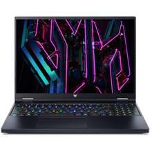
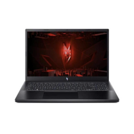

Acer Predator Helios Neo 16
The Acer Predator Helios Neo 16 is a high-performance gaming laptop designed for serious gamers and power users. It features the latest Intel Core i7 or i9 processors and NVIDIA GeForce RTX graphics, providing exceptional gaming and multitasking capabilities.
Acer Extensa
The Acer Extensa 15-inch Laptop meets the build quality and provides a reliable performance within its budget segment. This 15.6" screen laptop has a screen resolution of 1920 x 1080pixels making it great for long hours of entertainment and work. Also, it has a battery life of 8h.

Acer Nitro V 15
The Acer Nitro V 15 is a powerful gaming laptop designed for immersive gaming experiences. It features a 15.6-inch Full HD display with high refresh rates, providing crisp and smooth visuals. Powered by Intel Core i7 or AMD Ryzen processors and equipped with NVIDIA GeForce GTX or RTX graphics cards, it delivers high-performance gaming capabilities.